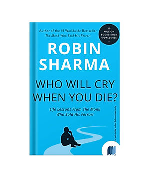

Library › Self-Improvement
Who Will Cry When You Die? — Summary & Key Lessons

Life lessons from the monk who sold his Ferrari — 101 short solutions for a life that matters.
📖 OPEN THE FULL INTERACTIVE BREAKDOWN →🌐 Read it in Hindi, Hinglish, Gujarati, Tamil & 22 more languages — free, with audio.
💡 The Big Idea
Sharma's most-gifted book — especially across India — is 101 bite-sized chapters answering its haunting title question: what will you leave behind? The essays cluster into repeated themes: live with urgency (the tragedy is not death but what dies inside while we live), practice daily disciplines (rise early, keep a journal, take weekly sabbaticals from noise), master the inner world (your days are your life in miniature — worry less, savor more), and above all: a life's greatness is measured in contribution, not accumulation. Each lesson is two pages, deliberately actionable — a philosophy of legacy delivered in espresso shots.
🧠 The 6 Key Lessons
Lesson 1: Discover Your Calling — the Deathbed Test
Lessons 1–10: Purpose & Urgency
The title's question is a filter for every decision: at your funeral, what will they say you stood for — and who will genuinely cry? Sharma's urgency doctrine: most people die at twenty-five and are buried at seventy-five — the dreams, boldness, and aliveness quietly suffocated by routine and postponement; the antidote is living each day 'as your last' not as recklessness but as ATTENTION: doing work that uses your gifts in service of others (his definition of calling), and refusing the deferred-life bargain. The micro-practices attached: keep a journal (a life worth living is worth recording — and the recording reveals the patterns), perform a weekly self-audit (what did I learn, whom did I help, what would I redo?), and write your own eulogy NOW — then live backward from it.
📖 Example: Sharma's recurring image: the businessman at the funeral of a friend, shaken not by grief alone but by arithmetic — realizing the deceased's schedule had been identical to his own: meetings attended, emails answered, dreams indexed for 'someday.' The eulogy… Read the full example →
⚡ Do this: Write your eulogy tonight — one page, the version you'd want true. Extract the three biggest gaps between it and your current week. Close one gap starting tomorrow, and start the nightly journal: three lines, every day.
Lesson 2: The Daily Disciplines: Rise, Read, Reflect
Lessons on Routine & Self-Mastery
Sharma's compounding trio appears throughout the 101: RISE EARLY (the 5 a.m. club's first draft — the pre-dawn hour as the day's rudder: exercise, planning, reading before the world's demands arrive); READ DAILY (30 minutes — 'a book is a mentor for the price of a meal'; reading the right book at the right time can reroute a life); and REFLECT (the weekly sabbatical: a half-day of deliberate silence — no inputs, just walking, thinking, journaling — because a life without reflection is motion without navigation). Supporting cast: practice solitude daily (even 15 minutes), master your worry (write worries down with scheduled 'worry time' — most dissolve on paper), and get serious about time: 'time slips through our hands like grains of sand, never to return' — the person who protects their hours is protecting their life.
📖 Example: The book's most-quoted arithmetic: 30 minutes of daily reading equals roughly 50 books over two years — a private university degree assembled from stolen half-hours, while the average adult reads almost nothing after school. Sharma's sabbatical exhibit: the… Read the full example →
⚡ Do this: Install the trio at starter scale: wake 30 minutes earlier (use it for reading + planning, phone off), and book one 2-hour silence sabbatical this weekend — walk, notebook, no inputs. Protect both like client meetings.
Lesson 3: The Little Things Are the Big Things
Lessons on Kindness & Relationships
A thick strand of the 101 is micro-contribution: be the first to say hello, remember names, keep your promises (every kept small promise is a brick in the cathedral of character; every broken one, a crack), compliment strangers, write thank-you notes (the handwritten note in a digital world lands like a meteor), and practice random kindness deliberately — because 'the smallest act of kindness is worth more than the grandest intention.' The relationship mathematics: at the end, nobody measures net worth — they measure moments; so schedule your priorities (the child's football game blocked in the calendar like a board meeting), listen twice as much as you speak, and treat family time as non-negotiable infrastructure rather than leftover scraps. Legacy, in Sharma's accounting, is built retail — one interaction at a time.
📖 Example: Sharma's father supplies the book's spine: the lesson that gives the book its title came from him — along with the practice Sharma describes of his father writing letters of appreciation to people who'd never expect them. The compounding exhibit: the… Read the full example →
⚡ Do this: Start the 3-note habit: three genuine appreciation messages weekly (at least one handwritten or voice). Block one immovable relationship appointment in next week's calendar. And keep every promise you make for seven days — including the ones to yourself.
Lesson 4: Simplify, Then Serve: The Legacy Equation
Lessons on Simplicity & Contribution
The closing themes interlock. SIMPLIFY: happiness lives closer to enough than to more — declutter possessions (each object owns a piece of your attention), say no gracefully and often ('the person who tries to do everything accomplishes nothing'), and reduce life to its vital few: the concentration of force that makes everything else in the book possible. Then SERVE: the book's final movement argues contribution is not philanthropy's luxury but meaning's mechanism — 'the purpose of life is a life of purpose,' and purpose is always found in giving yourself away: mentoring, volunteering, teaching what you know, planting trees whose shade you'll never sit in. The equation the 101 lessons add up to: a simplified life creates the capacity, daily disciplines create the character, and service creates the legacy — the answer to the title's question is built, deliberately, or not at all.
📖 Example: Sharma's tree-planting proverb anchors the close: 'the true meaning of life is to plant trees under whose shade you do not expect to sit' — paired with his gallery of ordinary legacies: the teacher whose funeral overflowed with three decades of students, the… Read the full example →
⚡ Do this: Run the subtraction week: each day, remove one thing (an object, a commitment, a subscription) that serves neither joy nor purpose. Then choose your shade tree: one recurring act of contribution (monthly mentoring, teaching, volunteering) that outlives the transaction — and plant it this month.
Lesson 5: The Mirror Test: Start Each Day With the Question That Guides It
Part 2: The Daily Rituals
Sharma's most famous practice: every morning, look in the mirror and ask yourself a guiding question — 'What can I do today to make it the greatest day of my life?' The mirror test works because it forces you to take ownership of the day before the world assigns you one. It converts vague ambition into a daily decision. Sharma pairs it with the 20/20/20 rule: 20 minutes of movement, 20 minutes of reflection (planning/journaling), 20 minutes of learning — the first hour engineered for body, mind and spirit. The day is won or lost in its first sixty minutes.
📖 Example: Sharma tells of readers who, after adopting the mirror question, found themselves making small but consistent choices — the workout they'd skip, the call they'd avoid — because the morning question had already set the standard. Identity, not willpower, did… Read the full example →
⚡ Do this: Tomorrow morning, stand in front of a mirror and ask aloud: 'What can I do today to make it my greatest day?' Then do the first answer that comes — before checking your phone.
Lesson 6: Loving Yourself First: The Discipline of Self-Care
Part 3: The Inner Game
Before you can love others, lead a team, or serve the world, Sharma insists you must practice the discipline of loving yourself — not as indulgence, but as maintenance. The exhausted, neglected self has nothing to give; the cared-for self overflows. His practices: daily solitude (even 10 minutes), protecting your energy from toxic inputs, celebrating your small wins, and forgiving yourself for yesterday. Self-care is not selfish — it is the foundation of every other contribution you'll ever make. You cannot pour from an empty cup, and pretending otherwise is the fastest road to burnout.
📖 Example: Sharma describes how his own burnout as a young lawyer — working 90-hour weeks until his body forced a stop — taught him that 'loving yourself first' is not a luxury but a survival strategy. The self-care habits he built afterward became the source of his… Read the full example →
⚡ Do this: Schedule 15 minutes of solitude today — no screens, no people — just you. Use it to ask: 'What am I neglecting that I need?'
✅ 5-Step Action Plan
- Write the eulogy; close one gap between it and your calendar.
- Wake 30 minutes earlier; take one 2-hour silence sabbatical weekly.
- Three appreciation notes weekly; one immovable relationship block.
- Subtract daily for a week — objects, commitments, noise.
- Plant the shade tree: one recurring act of service, this month.
⚠️ When This Doesn't Work
Sharma's 'live so people cry at your funeral' is lovely — and it can quietly become performance: a life curated for the mourners instead of lived for yourself. Nicolas Cage earned and spent a fortune chasing the image of the great eccentric artist, and the legacy he built was a tax bill and a meme. The book underweights that a life lived for applause is still an audience addiction. Be good for its own sake; the crying will take care of itself.
💀 The Graveyard Proves It
🦖 Nicolas Cage — Castles, Cobras & a Stolen Dinosaur Skull. Burn: $150M spent to tax debt. Read the full case study →
💬 Best Quotes from Who Will Cry When You Die?
- “When you were born, you cried while the world rejoiced. Live your life in such a way that when you die, the world cries while you rejoice.”
- “Don't let your days slip through your fingers like grains of sand.”
- “The person who tries to do everything accomplishes nothing.”
Interactive version: mark lessons as read, listen in your language, share quote cards.